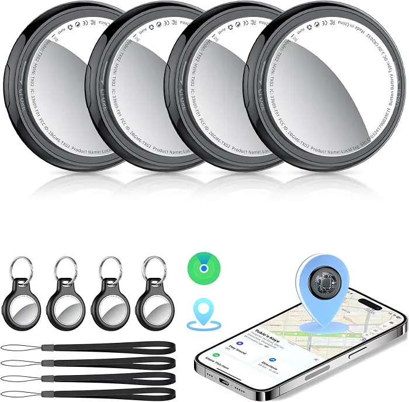

Apple users
Designed for compatible iPhone and iPad users who want multiple items tracked through Apple Find My.
Discover what to know about the Tukio Air Tracker Tags 4-Pack, including Apple Find My compatibility, iOS requirements, battery information, durability, tracking limitations, and buying considerations.

The Tukio Air Tracker Tags 4-Pack offers Apple Find My compatibility, replaceable batteries, IP67 protection, and accessories. However, buyers should consider the iOS-only requirement and mixed customer feedback about tracking, connectivity, and battery performance.
Designed for compatible iPhone and iPad users who want multiple items tracked through Apple Find My.
The package provides four tags, with support for Find My features such as Lost Mode and left-behind alerts where supported.
The product is designed for Apple's Find My ecosystem. Android users should choose a compatible alternative.
The supplied product information lists four tags, protective cases, key rings, lanyards, and batteries.
The tags connect through Apple's Find My app and can use the wider Find My network for locating items.
Four trackers are supplied with the listed cases, key rings, lanyards, and batteries.
The supplied Amazon listing reports 4.1 out of 5 from 4,575 global ratings. Ratings can change over time.
Android devices are not supported by this Apple Find My tracking setup.
The supplied customer feedback reports mixed functionality, connectivity, and tracking accuracy.
The supplied product review information indicates that this tracker does not support UWB-based Precision Finding.
It may suit iPhone or iPad users who want to track keys, bags, luggage, and other everyday belongings.
Check device compatibility and tracking capabilities before choosing a tracker.
The listed 4.1-star rating provides an initial indication, but individual customer feedback can help buyers understand reported strengths and limitations.
The supplied feedback summary highlights ease of setup, quality, and value. Some customers view the Tukio tags as a lower-cost alternative to Apple AirTags, particularly when they need four trackers.
The supplied testing notes describe straightforward setup through Apple Find My and successful remote location through the Find My network during testing. Nearby Bluetooth locating was less consistent, and UWB-based Precision Finding was not supported.
“A tracker can be useful without offering
AirTag-level precision.”
The supplied customer feedback is mixed on functionality and connectivity. Some users report easy pairing and useful tracking, while others report connection problems or unreliable operation. Tracking performance may depend on distance, device compatibility, and Find My network availability.
The supplied product information lists replaceable CR2032 batteries, up to approximately one year of battery life under stated conditions, and IP67 dust and water resistance. Actual battery life can vary with use and conditions, and some reported customer feedback mentions shorter battery life.
This product is designed for Apple's Find My ecosystem and does not support Android. For users with compatible Apple devices, that limitation may be acceptable. Android users should choose a tracker built for their own device ecosystem.
The Tukio Lucid Tag 4-Pack lists Apple Find My tracking, replaceable CR2032 batteries, IP67 protection, and accessories. Customer feedback highlights setup and value, while tracking, connectivity, and battery experiences vary. Confirm device compatibility and current product details before purchasing.
Check Current Amazon PriceCompare Apple AirTag with the Tukio tracker before deciding which option fits your device and tracking needs.

An alternative for Apple users who want an item tracker designed for Apple's Find My ecosystem. Check the specific model's features and compatibility before buying.
The supplied customer feedback highlights setup and value, with mixed reports about tracking accuracy, connectivity, and battery life.
A potential fit for compatible iPhone and iPad users who want four Find My-compatible trackers for keys, bags, luggage, and everyday belongings.
The tags are iOS-only, and the supplied customer feedback is mixed on tracking, connectivity, and battery performance.
Customer feedback highlights ease of setup and value, while tracking, connectivity, and battery experiences vary. Check device compatibility and product details before making a purchase.
Apple Find My supports nearby Bluetooth tracking and network-based locating where available.
The supplied package information lists four trackers with protective cases, key rings, lanyards, and batteries.
The supplied information lists replaceable CR2032 batteries and up to approximately one year of battery life under stated conditions.
The tags are designed for Apple devices using supported versions of iOS or iPadOS.
Review the listed features and reported customer experiences before choosing these Apple Find My-compatible Bluetooth trackers. Tracking consistency, connectivity and battery performance are important factors to consider.
The tags are designed to work with Apple's Find My ecosystem for nearby Bluetooth tracking and network-assisted item locating.
The supplied package information lists four tracker tags and accessories for attaching them to everyday belongings.
Supported Find My features include Lost Mode and left-behind notifications. The tags also use replaceable CR2032 batteries according to the supplied product information.
The supplied customer feedback is mixed. Some users report useful tracking, while others describe inconsistent accuracy or unreliable operation.
Some reported experiences describe easy setup, while others mention connection problems. Actual performance can depend on device compatibility and the tracking environment.
The supplied product information claims up to one year from a replaceable CR2032 battery. Actual battery life varies, and some customer reports describe shorter-than-expected use.
The Tukio Air Tracker Tags 4-Pack may suit Apple users who want several trackers in one package. Before buying, consider the iOS-only compatibility, the absence of UWB-based Precision Finding reported in the supplied testing notes, and mixed customer feedback about tracking, connectivity and battery performance.
Tukio Air Tracker Tags use Apple's Find My ecosystem to help locate everyday belongings. Their appeal is the four-tracker package, while the main considerations are iOS compatibility, tracking consistency and reported battery performance.
Find My compatibility and multi-item tracking are central to the Tukio tracker experience.
These trackers are designed for compatible Apple users who want to keep track of keys, bags, luggage and other everyday belongings through Find My.
The supplied hands-on testing notes describe setup through Apple Find My within seconds and a successful remote location during a parking-lot test. These observations describe the reported test conditions and should not be treated as a guarantee of performance in every location.
The supplied customer feedback highlights easy setup. The provided testing notes also describe a quick connection to Find My.
The supplied listing information specifies a replaceable CR2032 battery. Actual battery life can vary, and some customer reports describe shorter battery life.
Bluetooth supports nearby locating, while Apple's Find My network may help locate a tag beyond normal Bluetooth range when the network is available.
The important question is whether Apple Find My compatibility, four trackers and everyday convenience match your needs despite the reported limitations.
REVIEWNEST · BUYING CONSIDERATIONSThe package combines Apple Find My compatibility, four tracker tags and the listed accessories. These features may be useful for people tracking several everyday items.
Bluetooth supports nearby tracking. Apple's Find My network can help locate a tag beyond normal Bluetooth range when participating devices are available to detect it.
The supplied customer feedback highlights setup and value, but reports about tracking consistency, connectivity and battery life are mixed.
Review the supplied product details for compatibility, tracking features, battery information and durability before choosing the Tukio 4-Pack.
The main product details at a glance.
Four item trackers designed for Apple Find My.
Designed for supported Apple devices.
Nearby Bluetooth tracking and network-assisted locating.
Up to one year claimed in the supplied listing details.
The supplied product information lists IP67 protection.
The supplied listing snapshot reports 4,575 ratings.
Supplied listing information organized for easy reading.
How the listed features affect everyday use.
Nearby tracking uses Bluetooth. The Find My network may help locate the tag farther away when participating Apple devices detect it.
A replaceable CR2032 battery can be changed when depleted. Battery life depends on use and operating conditions.
IP67 is a protection rating. Follow the manufacturer's instructions and do not assume that water resistance is permanent.
These tags are intended for supported Apple devices using Find My. They are not an Android-compatible tracking solution.
The supplied product information lists four tracker tags, protective cases, key rings, lanyards, batteries and a user manual. Confirm the current package contents with the seller before ordering.
Compare the Tukio four-pack with Apple's own tracker to understand the differences in package size, ecosystem and buying considerations.
Four Find My-compatible trackers for buyers who want to track multiple everyday items.
Apple's own Find My tracker for buyers who prefer a first-party Apple tracking product.
The Tukio package may suit buyers who want to track several everyday items with one purchase.
Both options use Apple's Find My ecosystem. Check each product's supported features and device requirements before buying.
Compare the current four-pack price with the cost of Apple AirTag options. Also consider tracking features, connectivity reports and battery performance.
The Tukio Air Tracker Tags 4-Pack may appeal to buyers who need multiple Find My-compatible trackers. Apple AirTag is an alternative for those who prefer Apple's own tracker. Compare verified specifications, current prices and tracking features before purchasing.
Find out whether this Apple Find My-compatible tracker four-pack suits your device, tracking needs and budget.
A potential match for users with compatible Apple devices who want to locate everyday belongings through the Find My ecosystem.
The four-pack may suit buyers who want separate tags for keys, bags, luggage and other personal belongings.
Consider this bundle if you need several trackers and the current price compares favorably with the alternatives available to you.
These tags may help Apple users keep track of luggage, backpacks and other belongings that frequently move between locations.
You use Android and need a tracker designed for Android.
You need dependable tracking in situations where Bluetooth or nearby Apple devices may be unavailable.
You specifically require UWB-based Precision Finding.
You expect the advertised battery life to be guaranteed under every usage condition.
Tukio Air Tracker Tags may suit Apple users who need four trackers and want access to the Find My ecosystem. Consider battery-life reports, tracking limitations and the absence of UWB Precision Finding before deciding. Read our buying guide and product comparison for more details.
Find answers about Apple compatibility, setup, tracking range, battery life, water resistance and the four-pack bundle.
No. According to the supplied product information, these Tukio trackers use Apple's Find My ecosystem and are not compatible with Android phones. Confirm compatibility with your Apple device before buying.
The supplied instructions describe adding the tracker through Apple's Find My app. Activate the tag, open Find My and follow the supported-item setup instructions. The exact menu wording can depend on your device, software version and the tracker's compatibility.
Nearby locating uses Bluetooth, so actual range depends on the surroundings and connection conditions. Farther away, Apple's Find My network may help report the tag's location when participating Apple devices detect it. Do not treat a stated Bluetooth range as a guarantee of tracking distance in every environment.
The supplied product information claims up to one year from a replaceable CR2032 battery. Actual battery life depends on use and operating conditions. Customer feedback includes reports of shorter battery life, so the one-year figure should not be treated as guaranteed.
The supplied specifications list an IP67 water- and dust-resistance rating and state protection under specified immersion conditions. Water resistance is not the same as permanent waterproofing. Check the current product instructions and avoid assuming that protection remains unchanged after wear or damage.
The supplied information describes sharing with up to five borrowers through Find My on supported Apple software versions. Check the current Apple instructions and product compatibility details before relying on this feature.
They may be worth considering if you use compatible Apple devices and need four trackers in one package. The supplied rating is 4.1 out of 5 from 4,575 global ratings. Customer feedback includes mixed reports about tracking and battery performance, so weigh these factors against the current price and your needs.
The supplied package details list four tracker tags, silicone cases, key rings, lanyards, batteries and a manual. Check the current listing to confirm the exact contents before ordering.
The right tracker depends on more than price. Consider Apple compatibility, tracking expectations, battery life, water resistance and whether you genuinely need four tags. Review the buying guide before choosing.
Compare Apple AirTag and other compatible item trackers before deciding which tracking option suits your devices, budget and everyday needs.

Consider Apple AirTag if you prefer Apple's own item tracker and want an alternative designed for its Find My ecosystem. Check the current model's features, compatibility and price before comparing it with Tukio.

This bundle may suit compatible Apple-device users who need several trackers for keys, bags, luggage and other everyday belongings. Check battery and connectivity feedback before buying.

Compare other Find My-compatible trackers if you want to evaluate design, battery options, connectivity, included accessories and available features. Verify each product's compatibility before ordering.
Compare compatibility, tracking features, battery options and current prices before choosing a tracker.
Review compatibility, included accessories and tracking limitations, then verify the latest product listing.

Check the current Amazon price, availability, package contents, Apple-device compatibility and product details before placing an order.
Prices and availability can change. Verify the current listing and its terms before purchasing.
ReviewNest helps shoppers understand product features, compatibility, practical limitations and alternatives before spending their money.
Jump directly to the product overview, pros and cons, specifications, comparisons, buying advice or FAQs to find the information you need.
Understand the main benefits, tracking limitations, battery expectations and compatibility before buying.
Compare compatibility, available features, battery options and current prices to find a tracker that suits your needs.
Review the latest listing for price, availability, included accessories and Apple-device compatibility before placing your order.
ReviewNest helps you make an informed buying decision with practical product information, clear comparisons and useful guidance about Tukio Air Tracker Tags. Always verify the current product listing and compatibility details before buying.